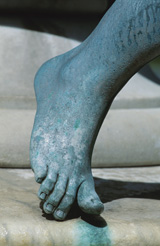

Module 3—Electrochemical Reactions
Lesson 1—Electrochemical Change

© 2008 Jupiterimages Corporation
Get Focused
Corrosion is a common sight on metal objects. Often we think of corrosion as the rusting of iron, but it can also be used to describe the change in other metals, like the copper in the statue shown in the picture.
What colour does the metal copper have? Can you explain what has happened to the copper in the statue? How could the copper metal change into copper ions, which appear to wash away from the statue? Is this an example of a chemical reaction and, if so, what happens when atoms change in this manner?
The type of change observed here, in which atoms appear to change form and charge, is an important type of change called electrochemical change. Electrochemical change is the focus of this unit.
Consider the following question as you complete Lesson 1:
- What is an electrochemical change?
 Module 1: Lesson 1 Assignment
Module 1: Lesson 1 Assignment
There is no assignment for this lesson.
There are other questions in this lesson that are not marked by the teacher; however, you should still answer these questions. The Self-Check, Try This, and other types of questions are placed in this lesson to help you review important information and build key concepts that may be applied in future lessons. You should record the answers to all the questions in the lesson and place those answers in your course folder.
After a discussion with your teacher, you must decide what to do with the questions that are not part of your assignment. For example, you may decide to submit the responses to Try This and other questions that are not marked to your teacher for informal assessment and feedback. Your answers are very important to your teacher. They provide your teacher with information about your learning, and they help your teacher identify where adjustments to your instruction may be necessary.